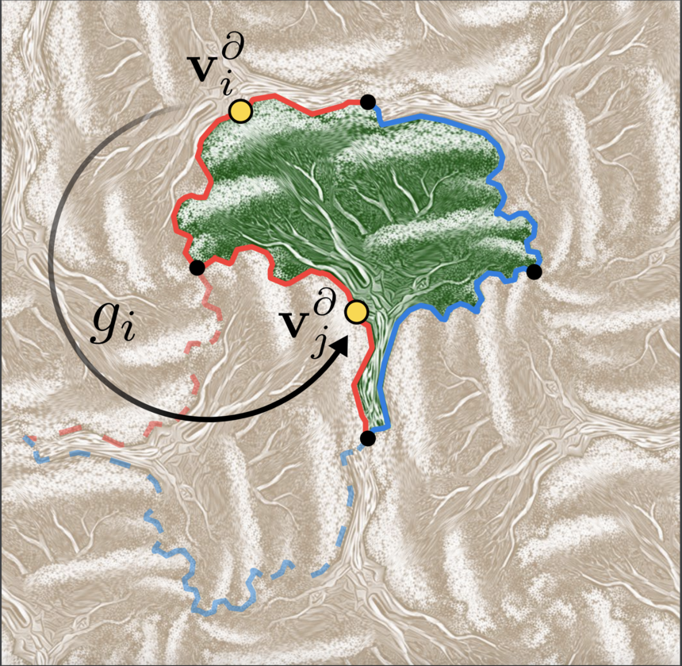

What do we call a tileable shape?
We say a shape is tileable with regards to a symmetry group if the action of the group on the shape creates a tessalation of the plane, i.e. a covering with no gaps, nor overlaps. There exist only 17 such symmetry groups, called the wallpaper groups.
The tiling's basic structure. The tile (in green) is mapped to a copy of itself (dashed boundary) by an isometry gi which is a member of the wallpaper group describing the symmetries of the desired tiling. The boundary vertex vi∂ is mapped by gi exactly to another boundary vertex, vj∂. This results in a correspondence along the boundary, visualized via matching boundary colors - one for each of the two symmetries which generate the tiling. Black vertices are fixed axes of rotation.